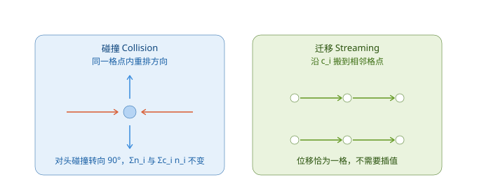
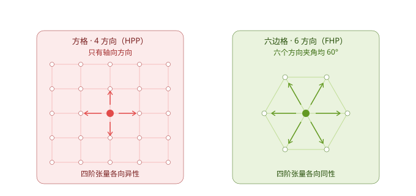

格子气自动机
思路
动理学基础 把描述从宏观量降到了分布函数。格子气自动机（lattice gas automaton, LGA）再往下离散三层：
| 被离散的对象 | 连续形式 | 格子气形式 |
|---|---|---|
| 空间位置 | \(\mathbf{x} \in \mathbb{R}^D\) | 只取格点 |
| 速度 | \(\boldsymbol{\xi} \in \mathbb{R}^D\) | 只取有限个方向 \({\mathbf{c}_i}\) |
| 分布函数 | 实数 \(f\) | 布尔值 \(n_i \in {0,1}\) |
\(n_i(\mathbf{x},t)\) 表示"从格点 \(\mathbf{x}\) 沿方向 \(\mathbf{c}_i\) 的连线上是否有粒子"。每条连线最多容纳一个粒子，这就是格子的排他原理。
经过这三层离散，整个模型只剩下一个固定格点和一套局部规则，结构上就是一个标准元胞自动机。
两步演化
一格时间步内做两件事，全部格点同步执行。
碰撞（Collision）
在格点上按规则把粒子重排到新的方向。规则必须满足两条守恒：
\[\sum_i n_i = \text{const}, \qquad \sum_i \mathbf{c}_i n_i = \text{const}\]
也就是碰撞前后粒子数守恒、总动量守恒。
迁移（Streaming）
每个粒子沿新方向移动到相邻格点：
\[n_i(\mathbf{x}, t+\Delta t) = n_i(\mathbf{x} - \mathbf{c}_i\Delta t, t)\]
迁移不需要插值：当 \(|\mathbf{c}_i|\Delta t\) 恰好等于格间距时，粒子精确地从一个格点走到相邻格点。

HPP 模型（1973）
Hardy、Pomeau、de Pazzis 提出的第一个格子气模型：二维方格，4 个轴向方向。
碰撞规则很简洁：只有对头碰撞（两个粒子沿相反方向迎面而来）会各自转向 90°，其余情况（单个粒子、三个粒子、四个粒子）维持原状。
问题：方格晶格的对称性不足，宏观方程中的粘性张量依赖方向，得到的不是各向同性的 Navier-Stokes 方程。HPP 无法正确模拟流体。
FHP 模型（1986）
Frisch、Hasslacher、Pomeau 把晶格换成六边格，6 个方向（可加静止粒子），各向同性得以恢复，首次正确再现了不可压 Navier-Stokes 方程。
各向同性的判据
晶格是否可用，取决于速度方向的四阶张量是否各向同性：
\[\sum_i c_{i\alpha} c_{i\beta} c_{i\gamma} c_{i\delta} = K\left(\delta_{\alpha\beta}\delta_{\gamma\delta} + \delta_{\alpha\gamma}\delta_{\beta\delta} + \delta_{\alpha\delta}\delta_{\beta\gamma}\right)\]
其中 \(D\) 为维数、\(b\) 为方向数时 \(K = \dfrac{b}{D(D+2)}\)。二阶矩同样需要满足 \(\sum_i c_{i\alpha}c_{i\beta} = \dfrac{b}{D}\delta_{\alpha\beta}\)。
- 六边格（\(D=2\)，\(b=6\)）：\(K = 3/4\)，两个条件都满足。
- 方格（\(D=2\)，\(b=4\)，只有轴向）：\(\sum_i c_{i1}^4 = 2\)，而需要的值是 \(3K = 3/2\)；\(\sum_i c_{i1}^2 c_{i2}^2 = 0\)，而需要的值是 \(K = 1/2\)。两条都不满足。

🔎 U. Frisch, B. Hasslacher, Y. Pomeau, Lattice-Gas Automata for the Navier-Stokes Equation, Phys. Rev. Lett. 56, 1505 (1986).
格子气的三个致命问题
尽管 FHP 在理论上成立，它作为实用方法很快被淘汰：
| 问题 | 原因 |
|---|---|
| 统计噪声大 | \(n_i\) 是布尔值，宏观量必须做系综平均；涨落按 \(1/\sqrt{N}\) 衰减，要得到平滑的速度场需要极大的平均量 |
| 伽利略不变性破坏 | 平衡分布是 Fermi-Dirac 型而非 Maxwell-Boltzmann 型，动量通量中出现依赖速度的非线性因子 |
| 偏差随密度增大 | 排他原理使分布偏离 Maxwell-Boltzmann 分布，密度越高偏差越大 |
这三个问题的根源是同一个：状态是布尔的。 解决方向只有一条——把状态换成实数。
本文出自CaterpillarStudyGroup，转载请注明出处。
https://caterpillarstudygroup.github.io/GAMES103_mdbook/